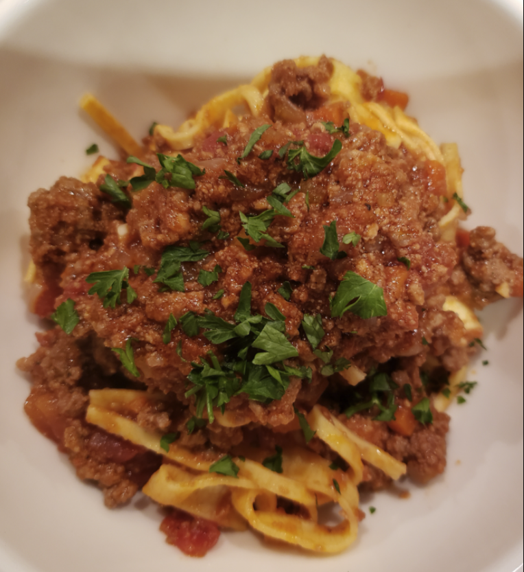

Bolognese Sauce

Description
Bolognese sauce is a meat based Italian sauce. Named after the city of Bologna, this is a sauce made from minced beef and a soffrito of onion, celery, and carrot. Traditionally the sauce is served on top flat noodles, although it is common today to make the sauce with other noodle types like spaghetti.
Ingrediants
- Butter
- Olive oil
- Diced onion
- Diced celery
- Diced carrot
- Salt
- Ground beef
- Black pepper
- Cayenne pepper
- Ground nutmeg
- Milk
- White wine
- 1 can whole Italian plum tomatos
- 2 cups water
Steps
- Melt butter with olive oil in a large saucepan over medium heat; cook onion, celery, and carrot with pinch of salt until onion turns translucent, about 5 minutes. Stir ground beef into vegetables and cook, stirring constantly until meat is crumbly and no longer pink, about 5 minutes. Season meat mixture with 1 1/2 teaspoon salt, black pepper, cayenne pepper, and nutmeg.
- Pour milk into ground beef mixture and bring to a simmer. Cook, stirring often, until most of the milk has evaporated and bottom of pan is still slightly saucy, about 5 minutes.
- Raise heat to medium high and pour white wine into ground beef mixture; cook and stir until white wine has mostly evaporated, about 5 more minutes.
- Pour tomatoes with juice into a large mixing bowl and crush them with your fingers until they resemble a slightly chunky sauce. Pour tomatoes into sauce; fill can with 2 cups water and add to sauce. Bring to a simmer.
- Reduce heat to low and simmer, stirring often, until mixture cooks down into a thick sauce, at least 3 hours but preferably 4 to 6 hours. Skim fat from top of sauce if desired. If sauce is too thick or too hot on the bottom, add a little more water. Taste and adjust seasonings before serving.